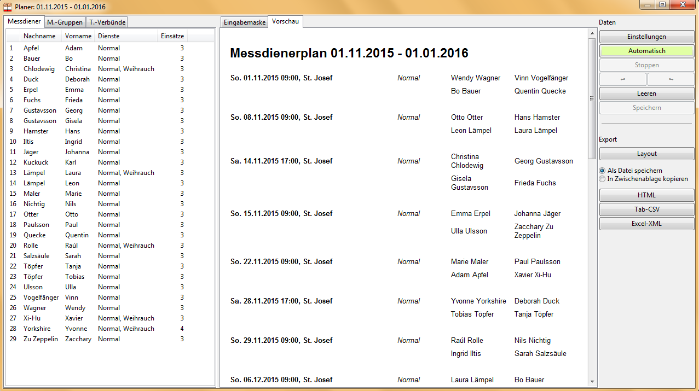
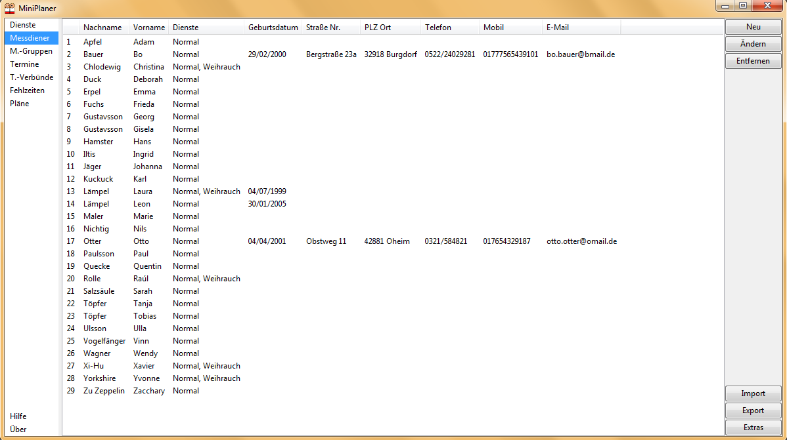

Software zum effizienten Erstellen hochwertiger Messdienerpläne.

Beim ersten Start können Sie leer oder mit Beispieldaten beginnen. Rückmeldungen sind herzlich willkommen!

Der MiniPlaner erstellt Messdienerpläne für Kirchengemeinden und Pfarrverbünde. Er ist übersichtlich, bietet aber vielfältige Einstellungsmöglichkeiten: Messdiener und Termine lassen sich gruppieren, das flexible Dienst-System erlaubt Maßlösungen, und Abwesenheiten können für Zeiträume oder einzelne Gottesdienste eingetragen werden.
So lässt sich etwa festlegen, dass mindestens ein älterer Messdiener oder jemand mit Weihrauch-Erfahrung dabei ist, dass Geschwister zusammen dienen oder dass niemand sowohl in der Vorabendmesse als auch im Hochamt dienen muss. Man kann viel eingeben, muss aber nicht.
Pläne für beliebige Zeiträume entstehen interaktiv oder automatisch durch einen Algorithmus, der mehrere Qualitätskriterien gleichzeitig berücksichtigt. Der Export ist möglich als Excel-Datei, CSV, Webseite oder PDF zum Ausdrucken.
Liegt die Messdienerliste schon als Tabelle vor, beschleunigt der CSV-Import die Eingabe enorm, ebenso Serientermine für periodische Termine.
Add-On MiniInterface: Legen Sie MiniInterface.php auf Ihrer Gemeinde-Homepage ab, dann tragen Messdiener zuhause selbst ein, wann sie dienen möchten. Der MiniPlaner berücksichtigt diese Daten bei der Planerstellung (Beispiel).